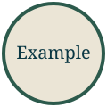
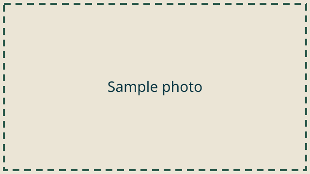

A sample announcement
A group can post news here: a new program, a closing for the holidays, a call for volunteers.
Community · Get a free page for your community

This is a sample page. A real group would put its own welcome here, in its own words, for the people it wants to reach.
Call 555-555-0100 Email info@example.org Website
This page is written and maintained by Example Community Group. Last updated November 23, 2026. Nina's Map hosts it for free and does not speak for Example Community Group. To change or remove it, Example Community Group can write to travis@vethomeguard.org.
Here a group says who it is, who it serves and what it wants people to know. It can be as short or as long as the group likes.
Everything on this page is invented to show how a page looks. The group, the town, the events and the numbers are not real.
A group can post news here: a new program, a closing for the holidays, a call for volunteers.
In Example Community Group's own words: what would help right now.
A group lists what it runs, who can join and how to start.
One or two plain sentences are enough.

Address: 100 Example Street, Anytown
Nations, tribal programs, urban Indian organizations, powwow committees, language programs, Native-owned businesses and community groups can have one for free. Here is how.